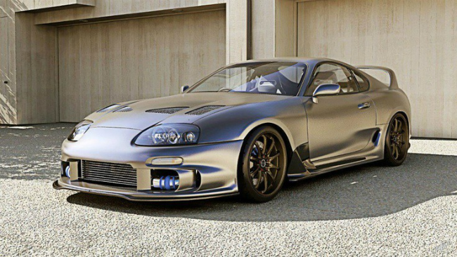
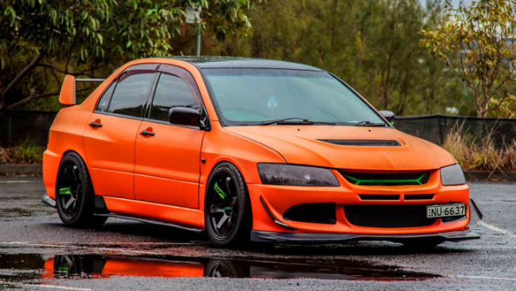

Coches Japoneses
La cultura automovilística de Japón ha aportado mucho al mundo del automóvil y se ha ganado a pulso, y gracias a sus innovaciones, su buen posicionamiento a nivel internacional, ya que los coches japoneses son muy fiables. Actualmente, aunque son muchas las marcas de coches japoneses , solo algunas son las más reconocidas y han dejado huella a lo largo de todo el mundo.
Marcas Japonesas:
- Toyota
- Nissan
- Honda
- Mitsubishi
- Subaru
A continuación nombraremos algunos de los mejores coches japoneses:
TOYOTA SUPRA
El Toyota Supra es un deportivo de tracción trasera producido por el fabricante japonés Toyota desde 1979 hasta 2002. En sus comienzos, el Toyota Supra derivaba del Toyota Celica, aunque ligeramente más largo y amplio. A partir de mediados de 1986, la tercera generación del Toyota Supra pasó a ser un modelo propio.
HONDA S2000
El Honda S2000 es un automóvil deportivo producido por el fabricante japonés Honda desde abril de 1999 hasta junio de 2009. El automóvil fue creado para celebrar el 50º aniversario de la compañía.
Es un descapotable de dos plazas con techo de vinilo de plegado eléctrico, motor central delantero longitudinal y tracción trasera. Tiene un diferencial de deslizamiento limitado Torsen acoplado a una transmisión manual de seis velocidades.
MITSUBISHI EVO
El Mitsubishi Lancer Evolution, coloquialmente conocido como Evolution o Evo, fue un automóvil de turismo sedán del segmento C producido por el fabricante japonés Mitsubishi desde 1992 hasta 2016 y basado en el mismo monocasco que el Mitsubishi Lancer. Ha tenido 10 versiones hasta 2010, y cada modelo nuevo es diferenciado con un número romano (EVO I, EVO II...EVO X). Todos comparten motorización de 2.0 L, turbo y tracción integral permanente.
